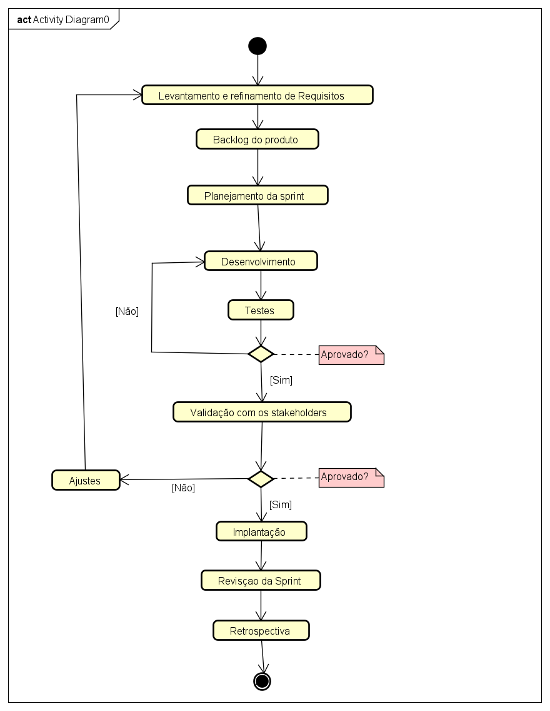

Visão Geral do Processo
Bem-vindo à documentação do processo de desenvolvimento ágil do projeto Carú para o PDS Corporativo.
Sobre o Processo
O CaruÁgil é um processo de desenvolvimento de software ágil definido especificamente para o projeto Carú, uma plataforma de comunidade e catálogo online voltada para entusiastas de perfumaria. O sistema permite que os usuários avaliem fragrâncias, façam resenhas e gerenciem listas personalizadas de perfumes que possuem, desejam ou recomendam.
O processo foi concebido para atender às características de um produto focado no engajamento da comunidade, havendo múltiplos perfis de interações, necessidade de evolução rápida de funcionalidades e garantia de uma interface agradável. Também foi levado em consideração o cenário que circunscreve a equipe de desenvolvimento: o ambiente acadêmico. Optamos pelo uso de técnicas e processos de diversas metodologias ágeis, com adaptações pensadas para este ambiente e considerando a experiência de desenvolvimento da equipe ao longo dos últimos semestres letivos.
Dito isto, o CaruÁgil combina práticas ágeis com etapas estruturadas de refinamento de requisitos, ciclos de desenvolvimento iterativos, testes de usabilidade e validação contínua com os stakeholders.
Ressalta-se que o processo descrito abaixo servirá como guia de trabalho para os próximos passos da equipe no PDS Corporativo. Desta forma, já temos em mãos os artefatos provenientes do processo de concepção da ideia do produto, que devem ser acessados pelos membros da equipe e atualizados pelos responsáveis sempre que houver necessidade.
Diagrama de Atividades

Descrição das Atividades
Detalhamento de cada etapa do fluxo de ciclo de vida do software:
1. Levantamento e Refinamento de Requisitos
Nesta etapa inicial, a equipe identifica as reais necessidades da comunidade de perfumaria. É aqui que são definidas ideias como o sistema de notas para os perfumes, a estrutura das resenhas ou como o usuário vai organizar suas prateleiras virtuais (perfumes que "tenho", "quero" e "já tive").
2. Gerenciamento de Backlog do Produto
Todas as ideias e requisitos levantados são transformados em itens de trabalho e centralizados no Backlog. O objetivo é priorizar o que traz mais valor para os usuários da plataforma primeiro (por exemplo, garantir que a busca por fragrâncias funcione antes de criar o sistema de listas personalizadas).
3. Planejamento da Sprint
A equipe se reúne para analisar o topo do Backlog do Produto, que já foi previamente definido e priorizado pelo gerente de projeto. Com base na meta estabelecida pelo gerente, o time de desenvolvimento seleciona quais itens tem capacidade de entregar no ciclo atual (Sprint) e planeja como a execução técnica será realizada.
4. Desenvolvimento
A fase prática onde o código da plataforma Carú ganha vida. Os desenvolvedores trabalham na construção das telas, banco de dados (catálogo de perfumes, marcas e notas olfativas) e nas regras de negócio para que os usuários consigam interagir na comunidade.
5. Testes
Assim que uma funcionalidade é codificada, ela passa por testes rigorosos para garantir que não haja falhas. Verificamos se o sistema de avaliação aceita as notas corretamente, se os botões funcionam e se o site se comporta bem em computadores e celulares. Se houver falhas, o fluxo retorna para Ajustes; se aprovado, segue em frente.
6. Validação com os Stakeholders
Com as funcionalidades prontas e testadas, o incremento do sistema é apresentado para validação (professores/orientadores do PDS ou usuários de teste). O objetivo é coletar feedback real e checar se o que foi desenvolvido realmente atende às expectativas de uma comunidade de perfumaria. Caso precise de mudanças, o item volta para a etapa de Ajustes.
7. Implantação
Após a aprovação total na validação, o novo incremento do sistema é publicado e disponibilizado oficialmente no ambiente de produção. A partir deste momento, as novas ferramentas, melhorias e o banco de dados atualizado ficam acessíveis para uso real da comunidade de perfumaria.
8. Revisão da Sprint
Uma reunião de encerramento do ciclo onde a equipe analisa o que foi planejado versus o que foi efetivamente entregue e implantado, consolidando os resultados alcançados na plataforma.
9. Retrospectiva
A última etapa do ciclo, focada na melhoria contínua da própria equipe. Os membros debatem o que funcionou bem no processo de trabalho e o que pode ser melhorado na comunicação, ferramentas ou código para a próxima Sprint do projeto.
Papéis e Responsabilidades
Definição dos integrantes da equipe e sua associação com as atividades.
Gerente de Projetos
É o elo entre os Stakeholders/cliente e os desenvolvedores. Ele dita o ritmo estratégico, decidindo quais funcionalidades (como o sistema de resenhas ou o filtro por marcas de perfumes) trazem mais valor para o usuário e devem ser criadas primeiro. Como adotado anteriormente de forma bem sucedida, em nosso processo ocorrerá rotatividade do membro da equipe responsável por esse papel. Ele será o único responsável por definir, refinar e priorizar o Backlog do Produto, entretanto, o processo decisivo será tomado em reunião coletiva, com consulta da equipe. Na função de elo, também atuará como facilitador e guardião do processo CaruÁgil aqui descrito. Ele garante que as reuniões de Planejamento, Revisão e Retrospectiva aconteçam de forma produtiva, protegendo o time de desenvolvimento de distrações externas e promovendo a melhoria contínua da equipe.
Equipe de Desenvolvimento (Developers)
É o time multidisciplinar responsável por colocar a mão na massa e transformar os requisitos priorizados em software funcionando. Na atividade de Planejamento da Sprint, eles definem quantos itens conseguem entregar e como vão construí-los. Durante o Desenvolvimento e Testes, criam as interfaces, gerenciam o banco de dados de fragrâncias e garantem a qualidade técnica do código. Eles são os únicos responsáveis por gerar o incremento pronto que será levado para a Implantação.
QA / Analista de Testes
É o responsável por garantir a qualidade final da plataforma Carú, atuando de forma estratégica nas atividades de Testes. O QA cria os cenários de teste, planeja os testes de usabilidade e tenta antecipar qualquer comportamento inesperado do sistema (como tentar avaliar um perfume sem estar logado, ou tentar inserir duas avaliações para o mesmo perfume). Ele trabalha em parceria com o time de desenvolvimento, validando se os critérios de aceitação foram cumpridos para que o incremento chegue seguro à fase de Validação com os Stakeholders. Em nosso processo, assim como o papel de Project Owner, haverá rotatividade entre os membros da equipe no desempenho deste papel.
Produtos de Trabalho (Artefatos)
Indicação dos artefatos gerados em cada atividade do processo.
Levantamento e Refinamento de Requisitos
No contexto atual da Carú, esta etapa gera atualização do documento de requisitos funcionais e não funcionais do projeto. Se necessário, também atualiza-se o Sumário.
Gestão do Backlog do Produto
Esta etapa gera uma lista de itens de trabalho, centralizados numa lista única, hierarquizada pelo Gerente de Projeto.
Planejamento da Sprint
Lista de itens de trabalho limitada ao período da Sprint que se dará início e lista de critérios de aceitação de cada item de trabalho.
Desenvolvimento
Código da implementação.
Testes
Roteiro de testes e relatório de testes.
Validação com Stakeholders
Incremento do produto.
Implantação
Build (versão estável e executável) e documentação atualizada.
Retrospectiva
Plano de melhorias.
Práticas Ágeis Aplicadas
Indicação das práticas ágeis utilizadas durante o desenvolvimento.
Base Scrum
Sprints (2 semanas), Product Backlog, Sprint Backlog e Incremento do Produto
Influência XP
Critérios de Aceitação e a prática de Integração Contínua. O papel do Gerente de Projetos como facilitador e "elo" estratégico também reflete essa abordagem.
Herança OpenUP
Documento de Requisitos (Funcionais e Não Funcionais), Roteiro de Testes (Scripts), builds específicos e as documentações de cada incremento do produto.
Adaptação do Time
O papel do QA/Analista de Testes foi integrado para focar na estratégia de qualidade e usabilidade, indo além da definição básica de "Desenvolvedor" do Scrum